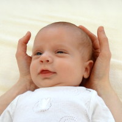
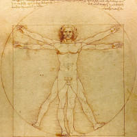
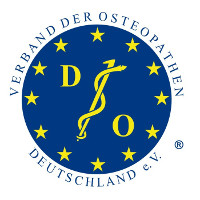
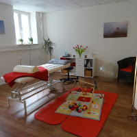

LENA HEIDENREICH Heilpraktikerin
An dieser Stelle möchte ich mich kurz vorstellen: Ich bin 1989 geboren und im Harzvorland aufgewachsen. Aktuell lebe ich in Hamburg, bin verheiratet und habe seit 2014 eine Tochter. Ich häkele leidenschaftlich gerne und solange es die Zeit zulässt gehe ich 3 Mal in der Woche zum Fitness-Boxen. In Zukunft möchte ich mich intensiver mit Ernährungswissenschaften beschäftigen.
2009-2014 Vollzeitausbildung am ECOM
Meine Ausbildung in Osteopathie habe ich als 5-jährige Vollzeitausbildung am European College of Osteopathic Medicine (ECOM) absolviert. Während der 5 Jahre habe ich nicht nur viel Zeit gehabt mich mit der Philosophie der Osteopathie auseinander zu setzen, sondern auch sehr viele verschiedene Möglichkeiten der Untersuchung und Behandlung erlernt. So kann ich für Ihre individuellen Probleme auch ein individuelles Behandlungskonzept zusammen stellen.

2014 FORTBILDUNG IN KINDEROSTEOPATHIE
Integrierte einjährige Fortbildung in Kinderosteopathie und gynäkologischer Osteopathie am ECOM

NOVEMBER 2014 Heilpraktikerprüfung
Meine Heilpraktikerprüfung habe ich erfolgreich am 26.11.2014 bei der Behörde für Gesundheit und Verbraucherschutz in Hamburg abgeschlossen.

FEBRUAR 2015 Mitglied im VOD
Ich bin im Verband der Osteopathen Deutschland e.V. (VOD). Dies ist der älteste und größte Berufsverband für Osteopathen. Die Mitgliedschaft versichert Ihnen als Patient, dass ich eine qualifizierte Ausbildung genossen habe und regelmäßig an Fortbildungen teilnehme.

2015-2017 Fortbildung Kinderosteopathie
Die osteopathische Arbeit mit Schwangeren, Säuglingen und Kindern finde ich besonders interessant. Deswegen habe ich eine 2-jährige Weiterbildung zu den Themen Schwangerschaft, Geburt und Kindesentwicklung gemacht. Seit September 2017 bin ich vom VOD e.V. zertifizierte Therapeutin für Kinderosteoapthie.

JANUAR 2016 Eigene Praxis
Seit dem 01.01.2016 habe ich meine Praxis in Hamburg-Harburg mit in den Räumlichkeiten der Physiotherapie “Physioteam am Rathaus”. Die Praxis befindet sich sehr zentral und S-Bahn nah direkt am Harburger Rathausplatz.
OKTOBER 2018 Elternzeit
Ab Oktober 2018 behandele ich vorerst keine Patienten mehr.